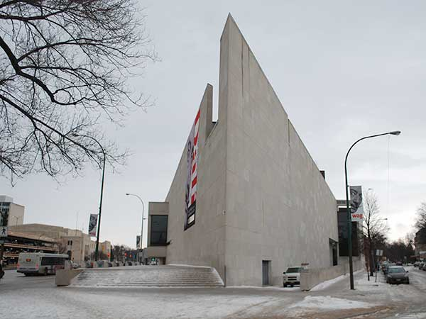

Winnipeg Santa Claus Parade 2026: Nov 14 Route and Times

Saturday, November 14, 2026. The Manitoba Hydro Santa Parade steps off at Portage and Main at 5 p.m. and runs west along Portage Avenue before turning south onto Memorial Boulevard and finishing at St. Mary Avenue. Sunset in Winnipeg that evening is 4:46 p.m., so the whole thing happens in the dark, which is the point: this is the largest nighttime parade in the country, and the floats are built to be seen lit. Admission is free, as it has been since 1909.
The question guests actually ask is not what the parade is. It is where to stand. So here is the route on foot, west to south, with what each stretch of it is like.
Portage and Main, where it starts
The parade forms up at the corner everyone in the city can name. Standing here is newly possible in an ordinary way: the concrete barricades came down and the at-grade pedestrian crossings opened on June 27, 2025, ending forty-six years in which you had to use the tunnels below. You will see the first floats before anyone else does. You will also see them cold, because they have not had time to spread out yet and they pass quickly, and because the wind funnels down Main between the towers.
If you want the start, come early. Portage closes to traffic between Main and Memorial at 2 p.m., and the block parties along the route open at 4 p.m., an hour before the first float moves.
Walking west along Portage
From Main to Memorial is about a kilometre and a half, fifteen to twenty minutes at an unhurried pace on a clear sidewalk, longer if the snow has come and the crowd is three deep. Most of the good standing is in this stretch, and it thins out the further west you go.
The blocks around Canada Life Centre and Manitoba Hydro Place, at 300 and 360 Portage, are the busiest, partly because that is where people arriving downtown end up and partly because the buildings cut the wind. If you have small children and want them to see over shoulders, walk another two or three minutes west past Donald Street; the crowd is thinner there and the parade has had room to string itself out, so you get longer gaps to move in. The trade is that you wait longer for the first float, and standing still in November is the hard part of this evening, not the walking.
At each intersection along the route, the space in front of the barricades is held for accessible seating and for anyone who needs help getting a view. The parade does not ask you to pre-register for those outdoor spots. Indoor accessible viewing exists too, but it has to be arranged before the day; the spectator pages on the parade's own site say how.
The turn onto Memorial Boulevard
Portage and Memorial is the corner where the route bends south, and a corner is a good place to watch a parade: you see each float twice, coming and going, and the bands slow to make the turn. The Winnipeg Art Gallery stands a short walk down Memorial from here, and the boulevard itself is wide and open, which means more room and more wind at once. Dress for the second of those.
Memorial is closed from early afternoon as well, northbound between Portage and Broadway and southbound between St. Mary and Broadway, so the sidewalks on both sides are yours.
Memorial and St. Mary, the end of it
The parade finishes here. Standing at the end has one real advantage: the head of the parade takes a long time to reach you, so you can leave the house later and still catch everything. It has one real disadvantage too, which is that the crowd disperses around you into the same few streets at the same moment. If you are catching a bus home, walk a block or two out of the finish before you look for a stop.
Getting there from Crescentwood, and why not to drive
Downtown parking on a parade evening is a poor bet with three streets closed from 2 p.m. From our corner of Crescentwood the D19 Corydon route runs downtown, and since the summer schedule took effect on June 21, 2026 it ends at a terminal on Kennedy Street rather than the old Webb Place stop, which puts you a block off Portage near Manitoba Hydro Place and close to the middle of the route. Winnipeg Transit lists the 2026 fare at $3.45 in cash or $3.10 on peggo e-cash; drivers do not carry change. Buses are detoured around the closures on parade day, so check the trip planner that afternoon rather than the timetable you used in the morning.
For food, Hargrave St. Market at 242 Hargrave Street is one block south of Portage, a covered food hall with a dozen counters under one roof and a good place to put a cold child back together afterwards. Vendor hours differ from the building's, so check hargravestmarket.com if you are counting on a particular counter.
A parade Eaton's started and a firefighter bought for $1.50
Eaton's brought Santa Claus parades to Winnipeg and Montreal in 1909, four years after the first one in Toronto. Rising costs ended the company's involvement after 1965, and Captain George Smith of the East Kildonan Fire Department bought the parade from Eaton's for a dollar fifty on behalf of the Winnipeg Firefighters Club. It has been community-run ever since, with roughly three thousand Manitobans in it each year.
That history is also why the start time is worth confirming. The parade has shifted its date and its hour before when something else downtown collided with it. Check mbhydrosantaparade.com in the week before you come.
Where to stay for the Santa Parade
Our two-bedroom home is in Crescentwood, just off Corydon Avenue, about three kilometres southwest of Portage and Main. That is the D19 ride described above, or ten minutes by car outside the closures, which matters more on this particular evening than the distance does: you can go downtown at four, stand in the cold for two hours, and be back in a warm kitchen before seven.
Mid-November is not peak season in Winnipeg, but parade Saturday pulls families in from across Manitoba and rooms downtown tighten for that weekend. Our Airbnb listing shows what is open around November 14.
Sources and what to re-check: the date, the 5 p.m. start, the 4 p.m. block parties, the route and the 2 p.m. road closures come from the Manitoba Hydro Santa Parade and Tourism Winnipeg as of September 2026; the fare and the D19 terminal change from Winnipeg Transit and the City of Winnipeg; the 1909 origin and the 1965 sale from published histories of the parade. The 4:46 p.m. sunset is calculated for Winnipeg on November 14. Times and closures are reset each year, so confirm at mbhydrosantaparade.com before you travel.